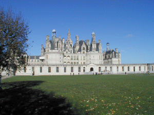

Le Château vu de dos ... inhabituel ! mais le soleil étant de ce côté le matin nous n'avions pas le choix !

Henri III et Henri IV n'y vinrent guère et Louis XIII le donna à son frère, le Duc d'Orléans.
Louis XIV y fit 9 séjours puis finalement le château fut donné au Maréchal de Saxe.
A la Révolution le château fut abandonné et commença à se délabrer, son mobilier fut saccagé.
Il fallut attendre 1930 pour que l'Etat s'en rende acquéreur et entreprenne sa réhabilitation.